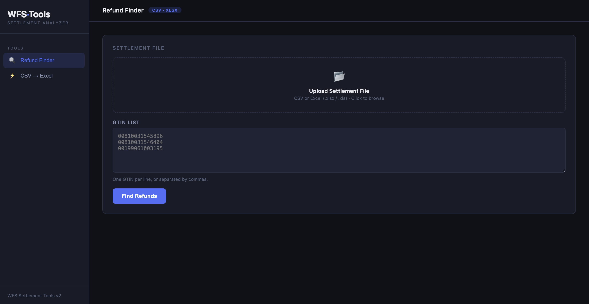
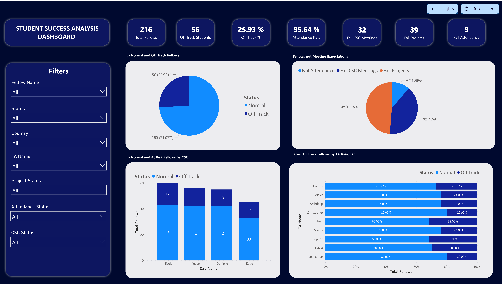

Frontend
Sushi Festival Landing Page
Responsive landing page for a gastronomic event featuring modern UI design, interactive sections, and optimized user experience.
Live projectResponsive landing page for a gastronomic event featuring modern UI design, interactive sections, and optimized user experience.
Live projectTerminal-based fighting game developed in Python with combat logic, gameplay rounds, and interactive CLI mechanics.
See projectOperational automation toolkit to streamline Walmart Fulfillment Services reimbursement workflows, audit tracking, and financial recovery processes.
See projectI'm a Software Developer and technical analyst focused on automation professionaling, business intelligence, and full-stack development.
My background combines operational problem-solving with technical tools such as Python, Power BI, JavaScript, SQL, Excel, HTML, and CSS. I build data-driven applications and automation solutions that improve workflows, reduce manual effort, and turn raw data into actionable insights.

A selection of work spanning data analytics, automation, and web development.
 JavaScript · CSS · HTML
JavaScript · CSS · HTML
Landing page for a sushi festival event with modern UI design, responsive structure, and interactive sections focused on user experience and visual presentation.

Operations · Automation · AnalyticsOperational toolkit designed to streamline Walmart Fulfillment Services reimbursement workflows, improving audit tracking, case management, and financial recovery processes.

Data Analytics · Power BIEnd-to-end analytics project focused on identifying at-risk students, analyzing engagement patterns, and building retention strategies using Power BI dashboards and data modeling.
 Data Analysis · Power BI
Data Analysis · Power BI
Interactive dashboard built with Power BI analyzing revenue, utilities, sales performance, and country-level insights using DAX.
 Python · Logic · Math
Python · Logic · Math
Python-based calculator focused on geometric operations, formulas, and problem-solving logic. Built to strengthen programming fundamentals, reasoning, and algorithmic thinking.
 Python · Game Logic
Python · Game Logic
Terminal-based fighting game developed in Python featuring multiple characters, combat rounds, and gameplay mechanics. Focused on logic flow, conditionals, and interactive gameplay.
Productivity system for organizing tasks, goals, and daily planning efficiently.
Modern responsive bakery website with product showcase and UI design.
Modern responsive landing page for a gastronomic festival.
Power BI-based analysis identifying at-risk students and retention patterns.
Operational toolkit for reimbursement tracking, audits, and workflow optimization.
Multi-page responsive portfolio built with HTML, CSS, and JavaScript featuring custom UI components, animations, and mobile-first design.
Music-themed responsive website with modern visual design.
Terminal fighting game built with Python combat logic.
Python CRUD system for inventory and product management.
Student management system using Python CRUD operations.
Interactive Power BI dashboard analyzing revenue, sales performance, utilities, and country-level insights using DAX and multi-source data modeling.
Python calculator for geometric formulas and measurements.